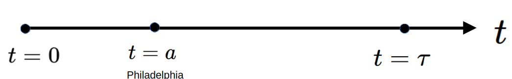
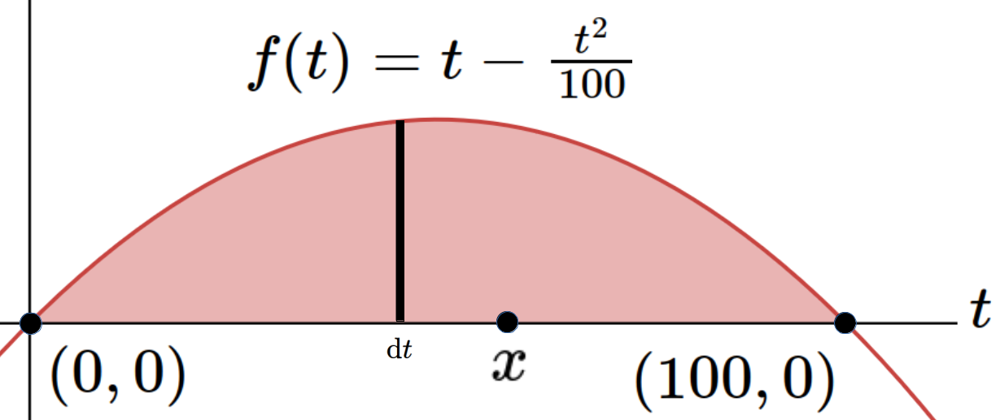

Example 3.2.0.1. The Integral as a Function.
(a) A Simple Example.
Suppose we drive due west on a straight, flat road at velocity \(V(t)=60\frac{\text{miles}}{\text{hour}}\text{.}\) At time \(t=a\gt 0 \) we pass through Philadelphia as in the following sketch. How far from Philadelphia will we be at time \(t=\tau{}\gt{a}\text{?}\)

Before we continue note that you already know the solution to this problem. This is the Distance = Rate \(\times{}\) Time problem that you studied in elementary school. So the solution is \(60(\tau-a)\text{,}\) or sixty miles per hour times the length of time spent driving between Philadelphia and our position at time \(\tau \text{.}\)
The point here is not to find the solution but to set it up using the integral concept. If we can do that in this very familiar setting then we will have a procedure we can follow in a less familiar setting. Once we can set up a problem as an integral finding the solution is reduced to evaluating the integral.
During every infinitesimal instant \(\dx{t}\text{,}\) we travel the infinitesimal distance \(60\frac{\text{miles}}{\text{hour}}\times \dx{t} \text{
hours} \text{.}\) Accumulating all of these we see that the total distance is represented by:
\begin{gather*}
\int 60\dx{t} \text{ miles}.
\end{gather*}
There is a problem of course. We’ve already defined the symbol \(\int 60\dx{t}\) to be the most general antiderivative (a multifunction) whereas the distance traveled depends uniquely on (is an ordinary function of) the elapsed time. We’ll need to modify our notation a bit to distinguish our current problem from the general antiderivative problem of Section 1.1.
Since we arrive at Philadelphia at time \(t=a\gt 0 \) we must have begun at time \(t=0\) somewhere east of Philadelphia. Ignoring the arbitrary constant for the moment (we’ll justify this momentarily) we see that the distance from our starting point to Philadelphia (when \(t=a\)) is
\begin{gather*}
\eval{\int{60}\dx{t}}{t}{a}
\end{gather*}
whereas the distance from the starting point to our location at time \(t=\tau{}\) is
\begin{gather*}
\eval{\int{60}\dx{t}}{t}{\tau{}}.
\end{gather*}
Clearly then the distance from Philadelphia to our position at time \(t=\tau{}\) is
\begin{equation}
D(\tau)=
\eval{\int{60}\dx{t}}{t}{\tau{}} -
\eval{\int{60}\dx{t}}{t}{a}.\tag{3.4}
\end{equation}
Finally, notice how much notation is repeated in equation (3.4). To avoid having to write all of that every time we do this sort of computation we will combine the two terms and simplify our notation as follows:
\begin{gather*}
\eval{\int{60}\dx{t}}{t}{\tau{}} -
\eval{\int{60}\dx{t}}{t}{a} = \tbeval{\int
60\dx{t}}{t=a}{\tau{}} = \int_{t=a}^{\tau }60\dx{t}.
\end{gather*}
So to compute our distance from Philadelphia at time \(t=\tau{}\) we need to evaluate the function
\begin{gather*}
D(\tau)= \int_{t=a}^{\tau{}} 60\dx{t}.
\end{gather*}
This is accomplished by finding any antiderivative of the integrand and computing the difference between it’s value at \(t=a\) and \(t=\tau \text{.}\) One antiderivative of \(60\) is \(60t+54.321\text{.}\) (Why would we choose such a weird number?) Evaluating we see that
\begin{align*}
D(\tau)\amp{} = \int_{t=a}^{\tau} 60\dx{t}\\
\amp{}=\tbeval{ 60t +54.321}{t=a}{\tau{}}\\
\amp{}= \left(60\tau +54.321\right) - \left(60a +54.321\right).
\end{align*}
So
\begin{align*}
D(\tau) \amp{}=60(\tau-a).
\end{align*}
or the distance between the points \(a\) and \(\tau{}\) is sixty miles per hour times the length of time we drive, as we stated at the beginning of this example.
The point of using \(54.321\) as the constant was to get your attention. It doesn’t matter which constant we choose since it subtracts away in the end.
(b) A Slight Generalization.
The simplest way to model the motion of a car driving on a straight, float road is to assume the velocity is constant as we did in Example 3.2.0.1. But this is unrealistic. In the real world cars do not move at a constant velocity. At the very least they speed up at the beginning and slow down at the end of the trip. We’ll tweak our model to include that behavior.
Suppose we drive for \(100\) hours on a flat straight road and that our velocity during the trip is given by the function:
\begin{gather*}
V(t)=t-\frac{t^2}{100} \frac{\text{miles}}{\text{hour}}.
\end{gather*}
Notice that \(V(0)=V(100)\) as required.
Just as in Example 3.2.0.1 the differential distance traveled during the time \(\dx{t}\) will be \(V(t)\dx{t}.\) Using the modifed integral notation we developed in the previous example the distance traveled at an arbitrary time \(\tau{}\) is given by
\begin{gather*}
D(\tau) = \int_{t=0}^\tau V(t) \dx{t}= \int_{t=0}^\tau
t-\frac{t^2}{100} \dx{t}.
\end{gather*}
Evaluating we see that we will travel a total of
\begin{gather*}
D(100)= \tbeval{\left(\frac{t^2}{2}-\frac{t^3}{300}\right)}{t=0}{100} \approx{}
1667 \text{ miles.}
\end{gather*}
Without inventing Calculus first—in particular without inventing the integral—it would have been nearly impossible to compute the distance traveled in this model. We say “nearly” because the very best of the generation of mathematicians who lived just prior to Newton and Leibniz — Fermat, Pascal, Roberval, Galileo, Cavalieri, or Torricelli — probably could have done it, though they would have considered it a very hard problem.
Archimedes probably could have done it too. Archimedes was amazing.
The rest of us are just grateful that the invention of Calculus makes this a fairly simple problem.
(c) Area as an Accumulation Function.
We used motion in parts (a) and (b) because you have a good deal of intuition about the motion of objects. But of course the underlying idea of accumulating some quantity by summing its (infinitesimal) pieces is completely general.
Suppose we want to find the area enclosed by the \(x-\)axis and the graph of the function \(f(t)=t-\frac{t^2}{100}\text{.}\) That is, we want to find the area of the shaded portion of the following sketch:

Just as in part (b) the function
\begin{gather*}
D(\tau) = \int_{t=0}^\tau V(t) \dx{t}
\end{gather*}
represented the distance traveled from \(t=0\) to \(t=\tau{} \text{,}\) the function
\begin{gather*}
F(x) = \int_{t=0}^xf(t)\dx{t}
\end{gather*}
represents the value of the shaded region between \(t=0\) and \(t=x\text{.}\) We have drawn a typical differential rectangle whose area is \(f(t)\dx{t}\text{.}\) The sum of the areas of all such rectangles from \(t=0\) to \(t=x\) is given by:
\begin{equation*}
F(x) = \int_{t=0}^{x}f(t)\dx{t}=\int_{t=0}^x
t-\frac{t^2}{100} \dx{t}.
\end{equation*}
will be the area of the shaded region. Evaluating the integral we have
\begin{align*}
F(x) = \int_{t=0}^{x}f(t)\dx{t}\amp{}=\int_{t=0}^x
t-\frac{t^2}{100} \dx{t}.\\
\amp{}= \tbeval{\left(\int_{t=0}^x
t-\frac{t^2}{100} \dx{t}\right)}{t=0}{x}\\
\amp{}= \left(\frac{x^2}{2}-\frac{x^3}{300}\right) - \left(\frac{0^2}{2}-\frac{0^3}{300}\right)
\end{align*}
so that
\begin{gather*}
F(x) = \frac{x^2}{2}-\frac{x^3}{300}
\end{gather*}
Evaluating \(F(x)\) at \(x=100\) we see that the area is:
\begin{gather*}
F(100) =
\frac{100^2}{2}-\frac{100^3}{300}
\approx{} 1667.
\end{gather*}
You will surely have recognized that, computationally speaking, the problem we solved here in part (c) is exactly the same as the one we solved in part (b). In part (b) we were accumulating differential lengths of the form \(V(t)\dx{t}\text{.}\) Here we were accumulating differential areas of the form \(f(t)\dx{t}\text{.}\) But since
\begin{equation*}
V(t)=f(t) = t-\frac{t^2}{100}
\end{equation*}
the computations needed for both problems were exactly the same. All that really changed was the interpretation of our symbols. It is often the case that phenomena that appear to be unrelated can be modeled by the same functions. We saw this in
[cross-reference to target(s) "CHAPTERLastElemFunc" missing or not unique] where we saw the the same model can be used to describe nuclear decay, population growth, and compound interest.(d)
In physics the concept of work is defined as “force through distance.” That is, if we apply \(2\) newtons of force to move an object \(3\) meters then we will have done
\begin{gather*}
\underbrace{2\text{ newtons}}_{\text{Force}}\times
\underbrace{3\text{ meters}}_{\text{Distance}}=
\underbrace{6 \text{ newton-meters}}_{\text{Work}}
\end{gather*}
of work.
Suppose we are walking in a straight line on a windy day and that the wind is blowing in our faces. Suppose further that the wind is gusting periodically. That is, suppose the wind blows in the negative direction with a base force of \(3\) newtons but that it gusts periodically up to \(5\) newtons, down to \(1\) newton and then repeats the cycle once per minute. So the force opposing our motion is \(\phi(t) = -(3+2\sin(t))\text{,}\) where \(t\) is measured in minutes. In order to overcome the wind we’ll have to match its force with an opposing force in the positive direction. If our walking pace is \(80\frac{\text{meters}}{\text{minute}} \) how much work must we do to overcome the wind as we walk \(160\) meters?
The force we apply must exactly cancel the force of the wind. So the force we need to exert is \(F(t)=3+2\sin\left(t\right)\text{.}\) The work we do in the interval \(\dx{x}\) is thus \(F(t)\dx{x}\) so the total work we do in walking \(160\) meters will be
\begin{gather*}
\int_{x=0}^{160} F(t)\dx{x} =
\int_{x=0}^{160} 3+2\sin\left(t\right)\dx{x}.
\end{gather*}
Apparently we need to evaluate this integral. But there is a problem. The force is given as a function of \(t\) but the indices and the differential are all in terms of \(x\text{.}\) We need for them to match before we can evaluate the integral.
For this problem it is easiest to put everything in terms of \(t\text{.}\) Since our walking velocity is \(80\frac{\text{meters}}{\text{minute}}\) we see that
\begin{gather*}
\dfdx{x}{t} =80\frac{\text{meters}}{\text{minute}}.
\end{gather*}
Thus \(x(t)=80t\) (why isn’t this \(80t+C\text{?}\)) and
\begin{gather*}
\dx{x} =80\frac{\text{meters}}{\cancel{\text{minute}}}\times
\dx{t}\cancel{\text{ minutes}} = 80\dx{t} \text{ meters}.
\end{gather*}
Making these substitutions in our integral we have
\begin{align*}
W(160)
\amp{}=\int_{t=0}^{2}\left(2+\sin\left(t\right)\right)80\dx{t}\\
\amp{}=\tbeval{80\left(2t-\cos\left(t\right)\right) }{t=0}{2}\\
\amp{}=80\left[\left(2\cdot2-\cos\left(2\right) - \left(2\cdot{0}-\cos\left(0\right)\right)\right)\right]\\
\amp{}=80\left[5-\cos\left(2\right)\right].
\end{align*}
So we do \(80\left[5-\cos\left(2\right)\right] \approx
433 \) newton–meters of work when we walk \(160\) meters against this particular wind.